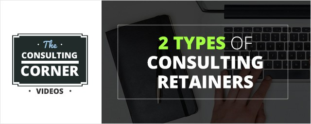

2 Types of Consulting Retainers
No matter what stage of business you’re in, consulting retainers can be the perfect value add for your clients and a fantastic source of predictable work for you. With this article, you’ll be able to set-up the perfect consulting retainer and add more revenue to your consulting business.
There are two types of consulting retainers that you can offer your clients. They are Pay for Work retainers, and Pay for Access retainers.The one that’s right for you depends on your relationship with your client and their level of trust in you and your expertise.
A lot of people have this idea that starting a consulting business is unstable. That when you work a 9 to 5 job and you’re in ‘general employment’ that that is real stability.Consulting retainers are one of the most effective ways to create a stable income because you get paid month in month out on an ongoing recurring basis